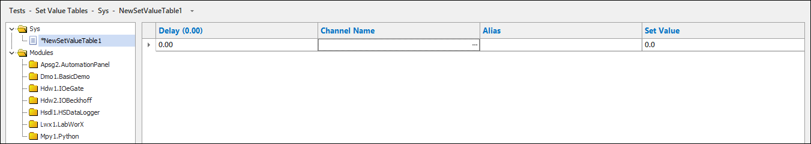

iTest User's Guide
Set value tables allow you to create a named sequence of values that change according to specified delay times. Programming experience is not necessary to create these table because a comprehensive editor is used to define the delay time, channel name, and set value. You can use analog, digital, and virtual outputs in set value tables.
To manage set value tables in SolutionBuilder, select Tests > Set Value Tables from SolutionBuilder's main menu to open the Set Value Tables editor. The Set Value Tables editor contains two sections: the list of set value tables and the editing area.
Set Value Tables Editor

The following right-click options are available:
Right-Click Options
| Option | Description | Keyboard Shortcut |
| List of Set Value Tables | ||
|---|---|---|
| Add | Adds a new set value table. For more information, refer to the Creating New Set Value Tables section. | - |
| Remove | Removes the selected set value table. | - |
| Rename... | Launches the Rename dialog, which allows you to rename the set value table. | - |
| Duplicate | Duplicates the selected set value table. | - |
| Cut | Removes the selected set value table and copies it to the clipboard. | - |
| Copy | Copies the selected set value table to the clipboard. | - |
| Paste | Pastes the copied set value table. | - |
| Undo | Undoes the last action. | - |
| Redo | Redoes the last undone action. | - |
| Editing Area | ||
| Insert Before | Inserts a new row before the highlighted row. | - |
| Add to End | Adds a new row to the end of the set value table. | - |
| Delete | Deletes the selected row. | - |
| Cut | Removes the cell's value and copies it to the clipboard. | Ctrl - X |
| Copy | Copies the cell's value to the clipboard. | Ctrl - C |
| Paste | Pastes the copied value. | Ctrl - V |
| Undo | Undoes the last action. | Ctrl - Z |
| Redo | Redoes the last undone action. | Ctrl - Y |
| Show Customer Name | Toggles between displaying the channel's alias or customer name if defined for the channel. | - |
To create a new set value table, do the following:
Set Value Table Column Descriptions
| Column | Description |
| Delay | The delay time in seconds. |
| Channel Name | The channel to use. This channel is restricted to virtual output channels configured as step parameters or step operands, analog output channels, and digital output channels. |
| Alias/Customer Name | (Read-only) The alias or customer name defined for the channel; this field is automatically populated if the channel has a defined alias or customer name. You can switch between which column is displayed via the Show Customer Name right-click option. |
| Set Value | The value to set the channel to. |